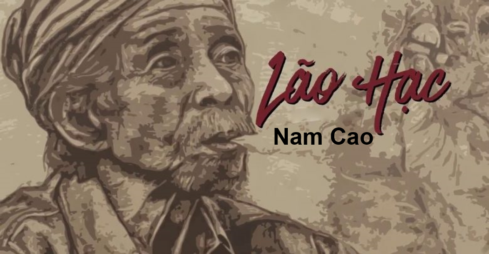

Giới Thiệu Chung
"Lão Hạc" là một truyện ngắn tiêu biểu trong sự nghiệp sáng tác của nhà văn Nam Cao, được in lần đầu trên báo "Tiểu Thuyết Thứ Bảy" năm 1943. Tác phẩm không chỉ phơi bày hiện thực tăm tối, nghèo khổ của người nông dân Việt Nam trước Cách mạng tháng Tám mà còn ca ngợi vẻ đẹp tâm hồn, lòng tự trọng và tình phụ tử sâu sắc của họ.

1. Tóm Tắt Tác Phẩm
Truyện kể về cuộc đời bi kịch của Lão Hạc, một người nông dân nghèo, vợ mất sớm, con trai vì quá nghèo mà bỏ làng đi phu đồn điền cao su. Lão chỉ còn biết bầu bạn với cậu Vàng, con chó mà con trai lão để lại. Lão Hạc sống trong cảnh túng quẫn, phải bán dần các tài sản, cuối cùng vì không muốn động đến mảnh vườn để lại cho con trai và không muốn làm phiền hàng xóm, lão đã đau đớn bán đi cậu Vàng.
Sau khi bán chó, Lão Hạc vô cùng ân hận và đau khổ, coi đó như một tội lỗi. Lão xin được nhờ ông Giáo (người kể chuyện) giữ hộ tiền bán chó và một ít tiền dành dụm để lo hậu sự. Cuối cùng, lão chọn cách kết thúc cuộc đời mình bằng bã chó (chất độc) để giữ trọn mảnh vườn cho con trai, giữ trọn nhân cách và lòng tự trọng của người cha, người nông dân lương thiện.
2. Giá Trị Của Tác Phẩm
"Lão Hạc" mang giá trị hiện thực và nhân đạo sâu sắc. Nam Cao đã khắc họa thành công một hình tượng nhân vật điển hình cho số phận người nông dân: nghèo khổ, bất hạnh nhưng giàu tình thương và lòng tự trọng. Bi kịch của Lão Hạc không chỉ là bi kịch vật chất mà còn là bi kịch tinh thần, khi nhân phẩm bị đẩy đến bờ vực thẳm.
Tác phẩm còn là sự chiêm nghiệm triết lý về cuộc sống của tầng lớp trí thức nghèo qua nhân vật ông Giáo, người luôn đấu tranh nội tâm để giữ gìn nhân cách. Cái chết của Lão Hạc là lời tố cáo mạnh mẽ xã hội cũ đã đẩy con người vào đường cùng, đồng thời là sự khẳng định cho vẻ đẹp tâm hồn cao quý, đáng trân trọng của những con người lam lũ.
3. Những Thông Tin Thú Vị Khác
- Đề Tài Hiện Thực: "Lão Hạc" được xem là một trong những tác phẩm mở đầu cho dòng văn học hiện thực phê phán giai đoạn 1930-1945, với lối viết chân thật, không tô vẽ mà đi thẳng vào nỗi đau của con người.
- Nhân Vật Ông Giáo: Nhân vật "tôi" (Ông Giáo) không chỉ là người kể chuyện mà còn là hiện thân của tầng lớp trí thức nghèo, luôn trăn trở về nhân cách và cuộc sống. Sự đối thoại nội tâm giữa ông Giáo và chính mình làm tăng chiều sâu tư tưởng của truyện.
- Tính Biểu Tượng: Hình ảnh "cậu Vàng" là một biểu tượng tuyệt vời của tình thương, lòng trung thành và cũng là ẩn dụ cho sự túng quẫn, khi Lão Hạc phải bán đi người bạn thân thiết nhất. Mảnh vườn là biểu tượng của trách nhiệm và tình phụ tử thiêng liêng.